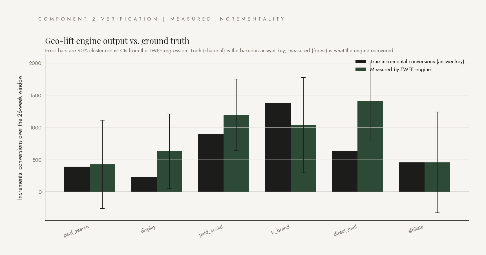

Recovering truth from public data alone.
Two-way fixed-effects panel regression with cluster-robust standard errors. Hand-rolled in numpy. The math any attribution interview will ask about, made visible.
Now the hard part: recover the answer key from public data without peeking at it. The technique is called geo-lift, and the math underneath it is something called difference-in-differences.
Imagine two cities, Phoenix and Tucson. Phoenix runs a TV campaign. Tucson does not. Phoenix's conversions go up by three percent during the campaign. Tucson's go up by one percent. Both cities probably had some shared trend, like seasonality. The lift attributable to TV is the difference of those differences: two percent. Subtraction twice. Once to remove the city's own baseline. Once to remove the common trend with the control. What is left is the causal effect.
We scale that two-by-two logic up across 50 cities and 26 weeks using a regression that absorbs every city's individual baseline and every week's average shock, leaving only the channel-on-or-off variation as the source of truth. The technical name is two-way fixed effects. The cluster-robust standard errors below are there because observations within a city are correlated across weeks, and ignoring that correlation makes p-values look more confident than they should.
The chart below is what the engine recovered. The error bars are the 90% confidence intervals from the regression. Notice TV brand and direct mail show large measured effects, paid search and display show small ones. The pattern is right; the per-channel magnitudes have honest uncertainty, which is exactly what cluster-robust SE is for.
The model
One linear probability regression, with city and week fixed effects soaking up everything that is constant within a city or constant within a week. The remaining identifying variation is the dark-period structure we baked into the synthetic data.
+ β1 · search_activec,w
+ β2 · social_activec,w
+ β3 · display_activec,w
+ β4 · tv_activec,w
+ β5 · mail_activec,w
+ β6 · affiliate_activec,w
+ city_FEc
+ week_FEw
+ εc,w
What the engine recovered
Forest bars are the engine's measured incrementality per channel, with 90% cluster-robust confidence intervals. Charcoal bars are the configured ground truth (shown for verification; the engine itself never sees this).

Implementation note
The engine in src/methods/did.py is hand-rolled with numpy: OLS via the normal equations, the cluster-robust sandwich variance formula, Acklam's algorithm for the inverse normal CDF. No statsmodels (no Windows ARM64 wheels), no scipy.stats (blocked by Smart App Control on this machine). Hand-rolling makes the math visible, line by line, in roughly 80 lines of Python.